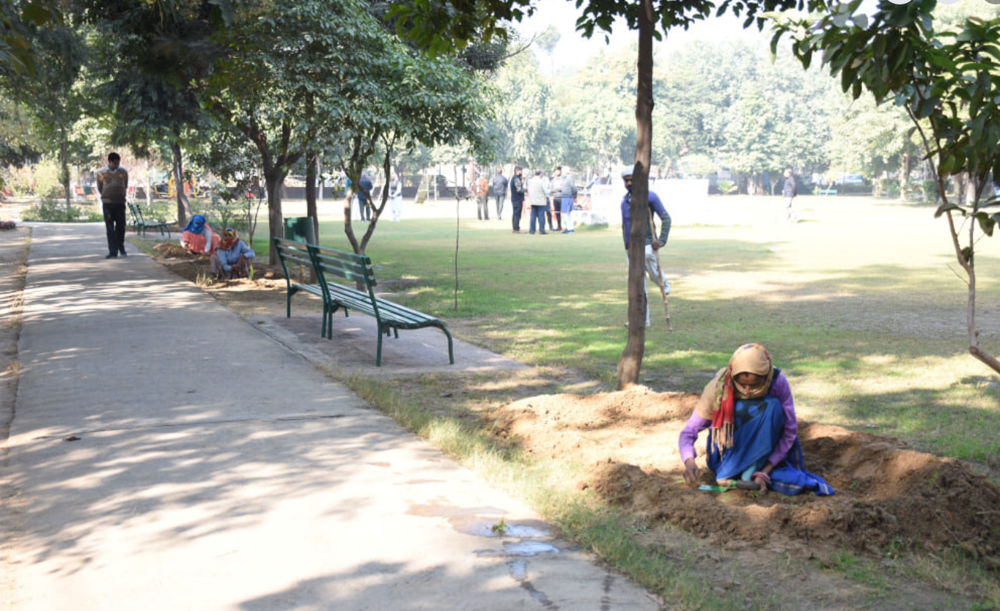
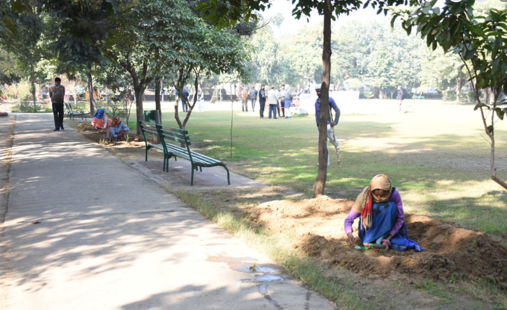

Urgent appeal
A Call to Rebuild Government Schools in Haryana
Government schools across Haryana are losing students to private campuses that promise better infrastructure, yet remain unaffordable for most families. Children from low-income homes are left to wonder where they belong as classrooms decay and morale drops.
We cannot allow this deterioration to become permanent. Every child deserves engaging teachers, safe spaces, and the dignity of equal opportunity. Together we can reverse the exodus—by uplifting schools meant for the public, not abandoning them.
The reality today
Broken desks, leaking roofs, and demotivated staff are forcing students out. Some schools report two-thirds of their classrooms unusable.
- 70% of parents surveyed cite poor facilities as the #1 reason for exit.
- Students from deprived sections have no affordable alternative.
- Learning loss widens every term we wait.
What we are doing
We are convening government departments, teachers, and community champions to co-create improvement plans for each cluster of schools in Haryana. Repairs, teacher motivation workshops, and student wellness clubs are being mapped school by school.
Transparent dashboards will keep communities updated on funds, timelines, and progress metrics.
How you can help
Ideas, manpower, CSR resources, and micro-donations ensure no child is left to study in neglect.
0
Students at risk of dropping out in 2025
0
Government schools identified for urgent upgrades
0
Community coalitions already mobilized
Raise a Fund
Lead a micro-fundraiser to support teacher motivation, infrastructure, or student wellness.
What we do?
Some Services We Provide
We partner with communities across Haryana to blend livelihood training, education access, and compassionate care so every family feels supported.
Stitching Training
Free tailoring classes for women and girls from under-resourced neighborhoods, boosting confidence, skills, and income.
Reading Room for Competitive Exams
Peaceful study space with mentors and learning aids for UPSC, banking, and other aspirants who otherwise lack support.
Environment Conservation
Tree plantations, zero-waste drives, and climate education sessions that protect ecosystems and inspire civic pride.
Cow Shelter Home (Gau Shaala)
Rescue and rehabilitation for abandoned cattle with reliable food, shelter, and veterinary care.
Tree Plantation Drives
Community-led plantations that improve air quality and restore green cover across villages and city pockets.
Volunteer Support Programs
Structured opportunities for citizens to mentor, teach, and mobilize resources for local causes.
Women & Girl Empowerment Programs
Skill-based workshops—from beauty arts to digital literacy—helping girls pursue careers with dignity.
Old Age Home Support
Nutrition, medical camps, and companionship initiatives for elders living alone or in assisted homes.

Stitching Training
Our Silai School empowers women and young girls with free tailoring and finishing courses. Alongside craft skills, they gain confidence, peer support, and a clear pathway to financial independence.
Join as mentorReading Room for Underprivileged Students
A serene, well-lit reading room designed for UPSC, banking, and other aspirants who cannot afford coaching hubs. We offer study desks, reference books, and mentors who keep learners focused through long preparation cycles.
- Open 7 days • quiet and supervised
- Guidance on schedules and scholarship forms


Environment Conservation
We conduct plantation drives, waste-reduction campaigns, and biodiversity walks that turn citizens into long-term stewards of the planet. Measurable climate action starts in our own neighborhoods.
- Community-led sapling care plans
- Workshops on soil health & water conservation

Cow Shelter Home
The Gau Shaala rescues abandoned cattle, ensuring nutritious feed, veterinary care, and patient caregivers. Every stall reflects dignity for animals who once wandered streets.

Trees Planted
Thousands of saplings nurtured with community guardianship. Every new plantation circle receives drip irrigation tips, mulch support, and citizen monitors who log growth.
 

Volunteer Program
Led by Dev Sir, our volunteer collective anchors every project—from relief distribution to student mentorship. They keep communities energized and accountable.
- Weekend clean-up and plantation drives
- Onboarding for corporate & campus groups

Women & Girl Empowerment
Skill sprints covering Silai, mehndi, beauty arts, and digital confidence. Graduates leave with portfolios, peer networks, and seed funding connects.

Old Age Home Support
Regular visits deliver meals, physiotherapy camps, and conversation circles for elders who crave company. We ensure every resident feels seen and celebrated.
Support the initiative